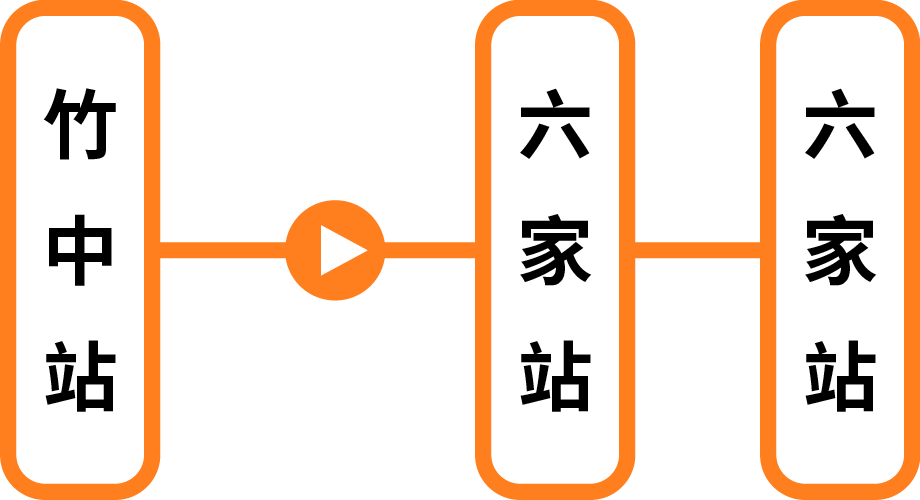
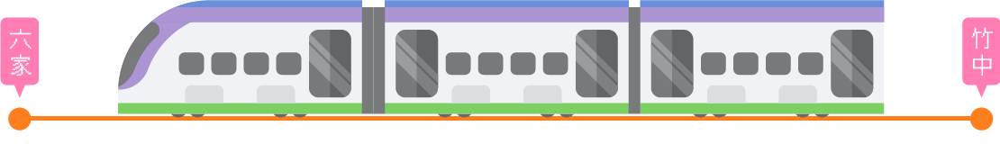
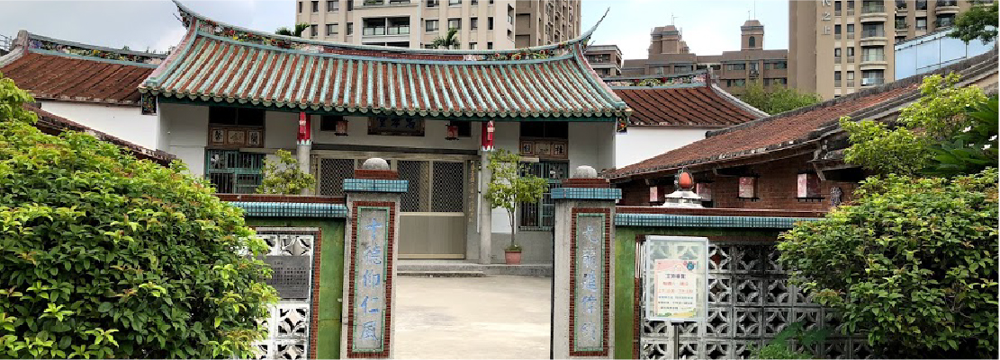
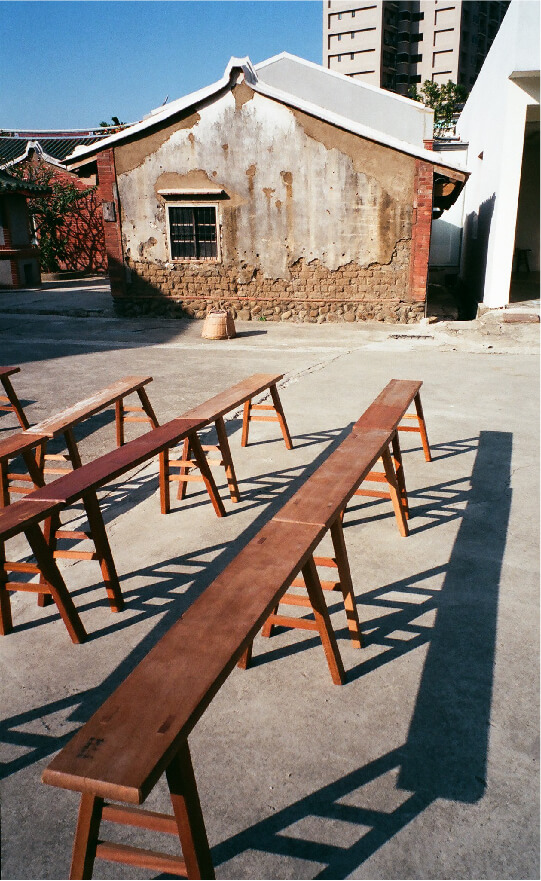

|臺灣鐵路管理局新建六家支線，並於 2011 年 11 月 11 日通車營運，在竹中站與「內灣線」銜接，連結臺鐵新竹站和高鐵新竹站，延伸至「縱貫線」, 形成的新竹鐵路網，無論是市區內的移動或是火車、高鐵的轉乘服務，還是轉往內灣的觀光路線， 皆提供了更加迅速的便捷服務，有效縮短行車時間，為民眾帶來便利的無縫接駁服務！


|新瓦屋被納入高鐵新竹站特定區的都市計畫範圍內，在地方文史工作者及六家居民的共同呼籲與努力下保存下來，經過行政院客家委員會與地方政府協調之後，劃設為全國第一處「客家文化保存區」，同時進行水田景觀復原計畫，這塊水田區域是高鐵特定區中僅存的三分田地，為竹北六家農村的歷史留下了見證。
|清嘉慶10年(西元1805年)。新瓦屋林家，來台祖為孫檀公，隨同林孫漳、林先坤父子（六張犁林家）一同渡海來台，於芒頭埔一帶開基，因較六張犁大夫第為新，故稱為新瓦屋。新瓦屋是一座封閉型的村莊，四周建有圍牆與外區隔，圍牆門樓則題有「西河世第」，圍牆內有數座古宅，以「忠孝堂」公廳圍聚落中心。氣勢更能襯托出典藏寶物宮殿的華麗。
